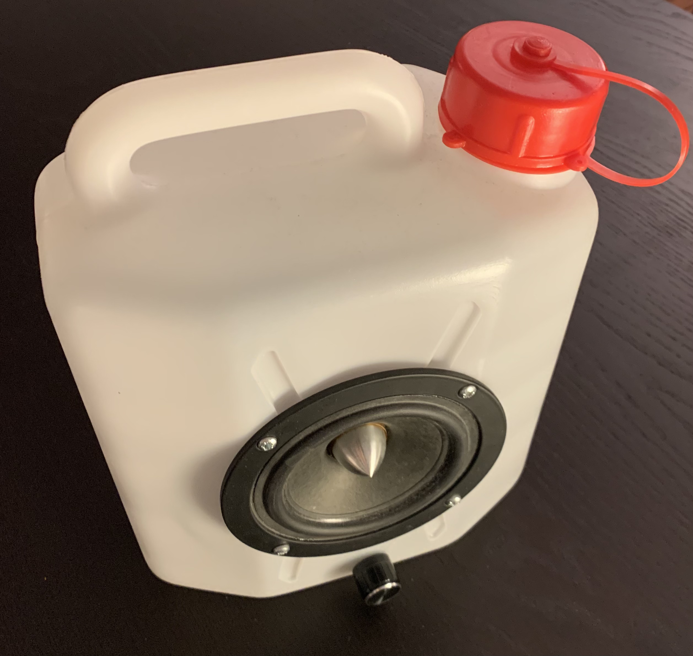

Mac Mini Home Lab pt.2
This is an update pertaining to my last post. Since then, I’ve set up a couple useful services and built a primitive but dynamic landing page.
Setup#
All the services are running their own servers, each listening on a different port. The landing page is powered by Node.js listening on port 80 and has links to everything else. Since some of the services are data intensive, I’ve set up the landing page to display current disk usage. Everything is running on the Mac Mini, but is currently only accessible on my local network.
ArchiveBox#
The first service I setup was ArchiveBox. Personally, I’m a small time data hoarder, so I really like having a personal offline internet archive. It’s especially nice for my Zettelkasten since I know my local archive will still be there in however many years.
Setting up ArchiveBox is straightforward, and while its tendency to spout a lot of error messages onto your terminal doesn’t inspire confidence everything works fine in the end.
Mopidy#
Mopidy is a music server. It allows devices on your network to playback music on the host. I’m running it on the Mini, which, in turn, has a shabby improvised speaker plugged in that actually works impressively well for what it is.

(Come up with something better when you’re quarantined in a college dorm with no tools but a screwdriver and scissors. I dare you.)
Mopidy can source songs from many places including local files, Spotify and Soundcloud, which is all I need. I’m using the Iris frontend. It’s a little glitchy/laggy, but it generally works well and it’s pretty. Overall, Mopidy has been very convenient as it democratizes the question of what songs to play at your next COVID party.
Zettelkasten#
Finally, I wanted to host my Zettelkasten on the Mini as well. With http-server’s stupidly simple setup, all it took was:
$ npm install -g http-server
$ cd ~/Zettelkasten/
$ http-server
Done!
Landing page#
To avoid having to manage a bunch of URLs, I thought setting up a simple landing page with links to all of the services would be a good idea. Plus it’d be listening on port 80 so you could just go to http://mini.local without having to remember a particular port.
Since it worked so well for Zettelkasten, I started off using http-server and static HTML again. However, I progressively got more and more ideas and added more and more stuff until I was running a full blown webstack consisting of Node, Express, Vue and Bulma. The result still is simple:
But I switched to a dynamic site because I wanted disk usage visible on the page. Thanks to Vue and Express, this was a surprisingly viable project for a webdev noob like me. It’s probably on the order of 100 lines of code (frontend plus backend), and I guess it qualifies as a nice dynamic website hello world. Plus it’s actually useful!
Here’s how I did it. First, have Express send a nice JSON object with disk usage stats when someone sends a request to /du:
app.get('/du', (req, res) => {
exec("df -lh | grep disk1s1", (error, stdout, stderr) => {
if (error) {
console.log(`error: ${error.message}`);
return;
}
if (stderr) {
console.log(`stderr: ${stderr}`);
return;
}
s = stdout.split(" ")
res.send({
disk: s[0], // indices hardcoded to macOS's df format
total: s[2],
used: s[5],
free: s[7],
perc: s[11],
});
});
})
The frontend requests this data on page load and passes the data on to Vue:
var du = new Vue({
el: '#du',
data: {
disk: "0",
total: "0",
used: "0",
free: "0",
perc: "0",
}
})
fetch("du")
.then(data => { return data.json() })
.then(res => {
du.disk = res.disk
du.total = res.total
du.used = res.used
du.free = res.free
du.perc = res.perc
})
Then, just put an HTML element to display the data:
<h1 id="du">{{disk}}: {{used}}/{{total}} ({{perc}})</h1>
and finally, it shows up like so:
/dev/disk1s1: 37Gi/223Gi (17%)
Next steps#
Reachability from the internet (with auth) would be very nice for Zettelkasten and ArchiveBox. I’m not perfectly sure how to do this securely enough but I’ve found some pointers. Further, I’m still waiting for the adapter for the second drive in order to get some more disk space. Once it’s there I might also run a Nextcloud instance and setup a mosh server to use with my iPad.